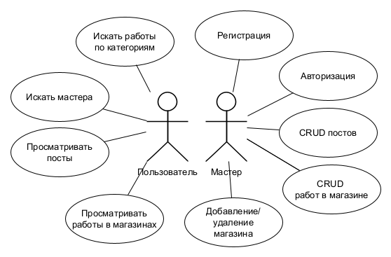
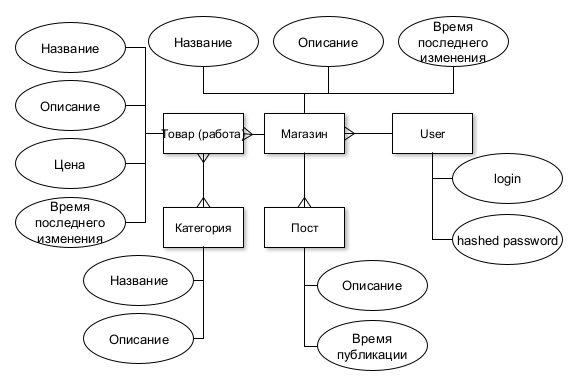
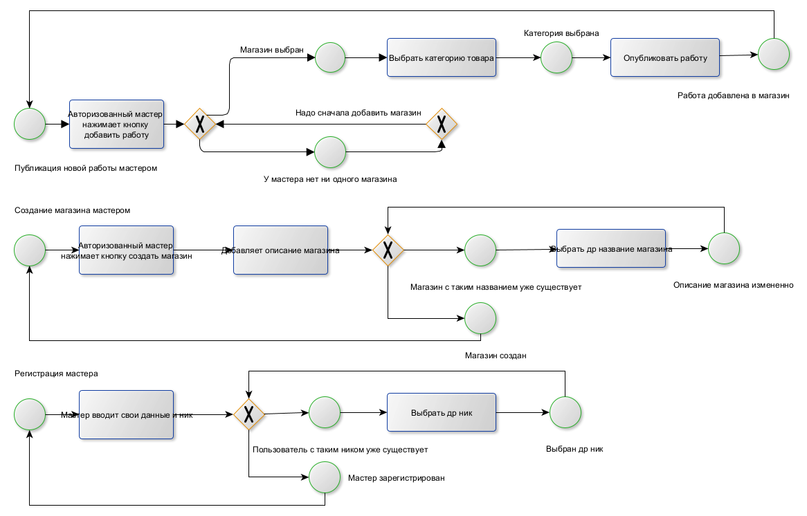
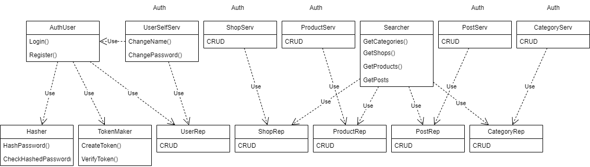
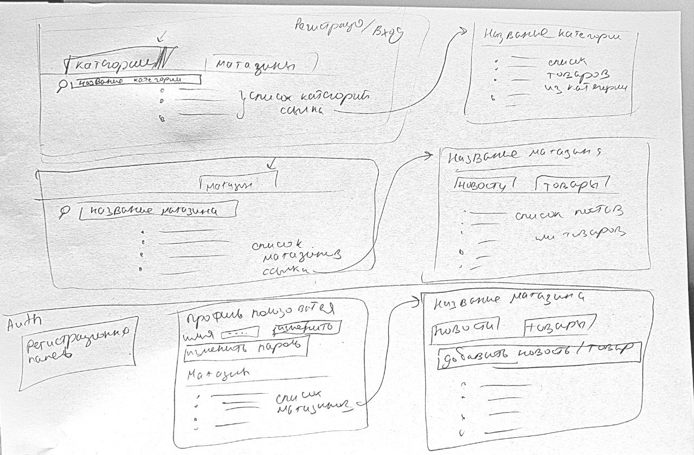

Платформа для мастеров ручной работы
Создать централизованную платформу, где мастера могут создать свое портфолио, а покупатели — открывать для себя уникальные товары и напрямую связываться с создателями.
Создание системы учета экспонатов находящихся в небольших частных коллекциях и распространения информации об их участии в сторонних выставках. С возможностью подписки на рассылку о новых выставках.
Мастер может создать свой магазин, создавать посты о своих работах, в своем портфолио указывать список своих работ(товаров) и свои соц сети для связи с покупателем.
Пользователь, может смотреть посты, по категориям и искать мастеров.
| Компонент | Технологии/Инструменты |
|---|---|
| Язык | Go |
| Контейнеризация | Docker, Docker Compose |
| Веб-фреймворк | Gin |
| Построение SQL-запросов | Squirrel |
| Аутентификация | Токены (PASETO/JWT, гибкость) |
| БД | PostgreSQL |
| Миграции БД | golang-migrate |
| Frontend | Web MPA (HTML-шаблоны через Go Templ) |
| Тестирование | Ozontech |
| Документация и тесты | Swagger (генерация через go-swagger) |





http://localhost:8080/swagger/index.html
api:
Исправления: user/id/login
пользователь ! users/:id/login users/:id/password
users/:id_user/posts
shops/id_shop/products
shops/id_shop/posts + передавать user id в request
Search (no auth) GET - categories/ (список всех категорий по фильтру имени) - categories/{category_id} (список всех товаров из категории) - shops/ (список всех магазинов по фильтру имени) - shops/{shop_id}/posts/ (список всех постов данного магазина) - shops/{shop_id}/products/ (список всех товаров данного магазина)
Auth POST - auth-user/login - auth-user/register
User PUT - update-username - update-password
GET - user-shops/
POST - user-shops (добавить магазин) - user-products/{shop_id} (добавить товар в данный магазин) - user-posts/{shop_id} (добавить пост в данный магазин)
PUT - user-shops/{id} (изменить магазин) - user-products (изменить товар) - (изменить пост нельзя)
DELETE - user-shops (удалить магазин) - user-products (удалить товар) - user-posts (удалить пост)